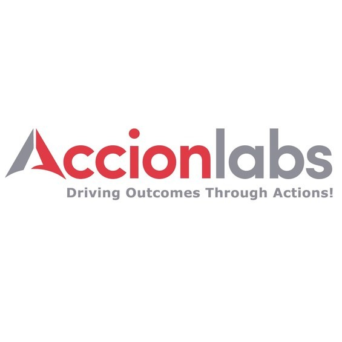

IT & Software Consulting
Tailored architecture and engineering solutions that drive efficiency, reliability, and long-term maintainability.
Independent Consulting Practice
Connecting Dots. Simplifying Complexity.
A bespoke consulting practice bridging deep engineering expertise with narrative and organizational strategy — built to help mission-driven teams turn complexity into clear, lasting outcomes.
// about
Gridplex Digital is a bespoke, independent consulting practice built on a polymath's approach: the best answers rarely come from a single discipline, so we move fluently across software engineering, applied AI, media, education, and organizational strategy rather than staying inside one lane.
Every engagement starts with rigorous research, then blends technical precision with narrative insight — across software architecture, applied and agentic AI, corporate training, media strategy, and organizational development — to turn complicated problems into clear, actionable plans.
Every engagement is rooted in integrity, cultural awareness, and a commitment to outcomes that outlast the contract — whether that means building a software architecture, designing an organizational development program, or curating nation-centric digital content.
// services
Tailored architecture and engineering solutions that drive efficiency, reliability, and long-term maintainability.
Designing and deploying AI-driven pipelines and automation that take real operational work off your team's plate.
Upskilling teams to meet evolving industry demands, from engineering fundamentals to applied AI.
Compelling narratives and creative direction that strengthen brand presence — grounded in hands-on leadership of a boutique media production house.
Structures and processes that enhance productivity, clarity, and collaboration.
Digital platforms, strategy, and communication artifacts built for mission-driven impact.
// approach
Understand the real problem, not just the brief, through structured discovery with your team.
Translate findings into a clear technical and strategic roadmap, scoped to your resources.
Implement the solution and equip your team to own it, not just receive it.
Track outcomes against the original goals and refine as your organization evolves.
// who we serve
// trusted by
From global technology firms to grassroots institutions — a snapshot of the organizations Gridplex Digital has partnered with.

// faq
Gridplex Digital is a bespoke, independent consulting practice founded by Dr. Aniket Pingley, offering IT and software consulting, agentic AI and automation, corporate training, media strategy, organizational development, and capacity building for non-profits.
Gridplex Digital was founded by Dr. Aniket Pingley, a polymath consultant whose cross-disciplinary background spans Intel (Software Architect), MathWorks (Principal Engineer), IIIT Nagpur (Professor), and two years as CEO of a boutique media production house in Nagpur, along with a Ph.D. in Computer Science (Data Privacy).
Services include IT and software consulting, agentic AI and intelligent automation, corporate and technical training, audio-visual content and marketing strategy, organizational development, and capacity building for non-profits and NGOs.
Gridplex Digital is based in Nagpur, India, and works with organizations worldwide, both in person and remotely.
Yes. Gridplex Digital works with mission-driven startups, non-profits and NGOs, educational institutions, and corporates investing in upskilling and organizational development.
// contact
Based in Nagpur, India — working with organizations worldwide, in person or remote.
LinkedIn: Gridplex Digital · Founder: Aniket Pingley, Ph.D.